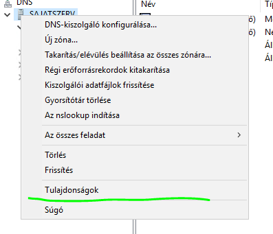

DNS szolgáltalás konfigurációja
Előfeltételek:
- Szerver FQDN beállítása
- Szerver átnevezése
- DNS utótag
- Külső IP cím (10.0.5.x) [x = számítógéped IP címének utolsó oktettje]
- Maszk (255.255.0.0)
- Átjáró: 10.0.3.100
- Belső IP cím (szabaddöntés általában vagy amit a feladat kíván)
- Maszk: 255.255.255.0(általában C osztályos címhasználat)
- DNS szerver: 127.0.0.1
DNS kérések figyelésének korlátozása a belső hálózatra:
Továbbítók beállítása:
Zóna létrehozás:
2 zóna van címkeresési és névkeresési a létrehoszásuk hasonlómódon zajlik.A címkeresési zóna maga a cím bejegyzés az a cím amit a szolgáltatás a szerver ip címéhez kapcsol. A névkeresési ennek a fordítottja ami a címre válaszol ip címmel.
Létrehozásuk egyáltalán nem bonyolult ahogy az ábrák is mutatják:


A zónanévnek egyeznie kell a számítógép DNS utótagjával
Nem kötelező de ajánlott a frissítés engedélyezése.
Ezután a címkeresési zónánk kész hozzuk létre a névkeresési zónát is az alábbi módon:

Adjuk meg a zóna nevét ami a szerver belső hálózati címének első 3 oktettje
Pro tipp:A zóna fájl nevét nem piszkáljuk!

Vegyük fel az állomást/állomásokat(A rekordot/rekordokat) amennyiben már szerepelnek a zónában nem szükséges
Ezzel elkészült a névkeresési zónánk.
Állítsuk be a szervert hogy csak befelé szolgáltasson. A következő képpen:

A módosításokat ne felejtsük alkalmazni! Ezután működőképes a DNS szolgáltatás.
Aktív directory
Pici elmélet:
Centralizált jogosultságok és kezelhetősége és a hierarchia miatt előnyös.
Az adattárolás viszont de centralizált (redundásan van tárolva).
DNS kiszolgálóval együtt jár.
- Erdő: Egy vagy több tartományt foglal magába az első tartománya a gyökért tartomány
- Objektumok: Egy adott tartomány felhasználói és eszközei
- Szervezeti egység: A szervezeti egységek használatával a tartományon belüli hierarchia megfeleltethető a válalati struktúra logikai felépítésének
- Multimaster (több főkiszolgálós) replikáció: Egyszerre többhelyen is elérhető az információ ugyan abban az állapotban
- Címpartíciók: